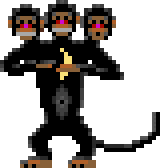

I was born in 1985 near Tarragona, Spain. My first contact with a computer was with a Victor 9000 modified by my father with a 80286 processor.
It was the MS-DOS era, and my first programing experience was making .BAT shell scripts, with 9 years old. Later on, a 80486 DX33 came into my house, that was the first time I seen a CRT color monitor, and also the first time I used a window system (Windows 3.11).

To be continued…